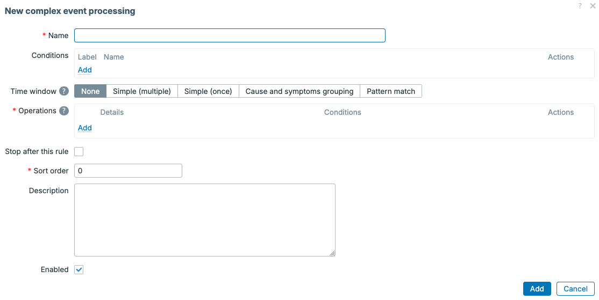
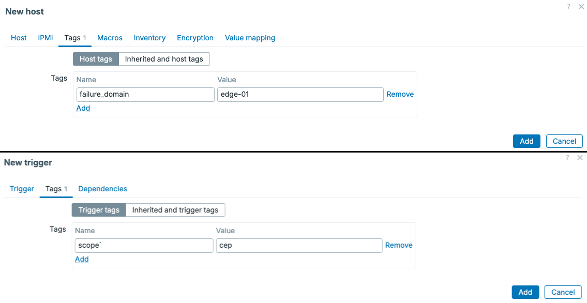
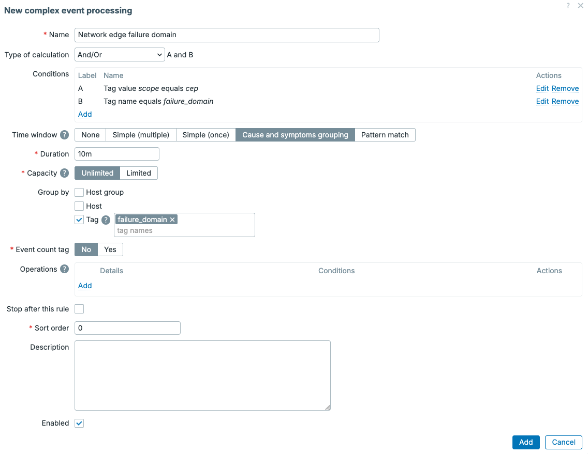
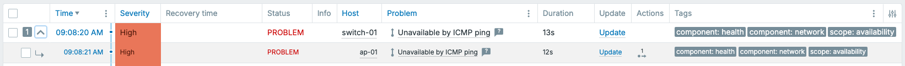

Complex event processing
When we start monitoring more and more devices, we also start generating more and more events. Of course, this is exactly what we want Zabbix to be doing, but it can introduce a new problem. A single device failure might result in tens, maybe even hundreds of problems
For example, let's say a network switch with several access points connected behind it goes down. When the switch goes down, all of the access points connected to that switch will become unavailable as well and generate a problem in Zabbix. In this case the switch is the actual cause, while the access point problems are only symptoms of that same failure.
This is where Complex event processing, or CEP is going to make a
big difference in. CEP was added in Zabbix 8.0 to avoid alert fatigue
from many problems related to a single other problem. We can use CEP to
group events together, instead of looking at every event as a completely
separate problem.
The basics
As we have learned, normally a trigger evaluates our item values and
generated a problem event. This is then seen as a problem when we look
at our dashboards or Monitoring | Problems. This fact does not
change with CEP. CEP only starts working when the problem event has been
created, using CEP we can decide what should happen with the problem event
before it executes things like Actions to send out alerts.
You can think of the event flow as follows:
flowchart LR
A[Item value] --> B[Trigger]
B --> C[Problem event]
C --> D[CEP rules]
D --> E[Problems and actions]
A CEP rule consists the following important parts:
- Conditions define which events should be processed by the rule
- Time window processing defines how matching events are kept together within time windows
- Operations define what Zabbix should do with matching events
- Sort order defines the order in which multiple CEP rules are executed
- Stop after this rule prevents later CEP rules from processing the event
CEP rules are executed in their configured sort order. Changes made by an earlier rule their operations (such as adding a tag), are visible to rules executed afterward.

7.5 Event processing overview
These are only the basics, as we can get more options through Simple (multipe), Simple (once), Cause and symptom grouping and Pattern match.
Sliding time windows
The most important CEP concept to understand is the sliding time window.
When problem events start, they are added to the CEP window, which is
not a fixed block from 09:00 until 09:10 and then another block from
09:10 until 09:20. Instead, the window starts only as the problem event enters
the CEP rule and then moves forward in time.
Let's say we configure a window duration of 10m, the Zabbix CEP rule
will keep looking at the events from the most recent ten minutes.
New events enter the window, while events older than ten minutes
leave it. Leaving a window is called eviction.
flowchart LR
A[09:49 event
Evicted]
subgraph W[Current 10 minute window]
B[09:52 event] --> C[09:56 event] --> D[10:00 new event]
end
A -. Older than 10 minutes .-> B
A window can also be configured to have a limited Capacity.
For example, a capacity of 5 means that only five events
can be in the window at any given time. When a sixth event
enters, an older event has to be evicted. Setting the capacity
to Unlimited means that the duration of the entire CEP
window controls when events leave the window.
Depending on the processing type, we can also create separate windows by creating groupings based on:
- Host group
- Host
- Tag
Grouping by a tag is especially useful when events from different hosts belong to the same service, location, or a failure domain. We can use this to relate problems from different hosts and/or triggers to each other.
Time window processing options
Zabbix provides several CEP processing options. They all start with matching events, but the different processing options handle those events differently.
None
The None option processes single events without placing them in a time
window. It is always executed directly when a problem starts. This is
specifically useful when we want to add additional information to an event
immediately, for example by changing the severity or by adding a tag.
Simple
There are two Simple options to choose from in Zabbix CEP rules.
Both Simple (multipe) and Simple (once) place matching events
in a sliding time window. Our events will leave the CEP window when
they reach the configured duration or when the window
reaches its capacity.
While an event is in the window, Operations can be executed. Specifically when the event occurs, is added to the window, is evicted from the window, or when the window closes specific operations can be executed.
The main use case of the two Simple processing types:
-
Simple (multiple) allows the same event to enter every matching
Simple (multiple)rule. Use this when several independent CEP rules need to process the same event. -
Simple (once) allows the event to enter only the first matching
Simple (once)rule. The CEP sort order becomes important in this mode. Place the most specific rule first and more general fallback rules afterwards.
Think of Simple (once) as an if / else chain, while Simple (multiple)
is more like a catch-all rule allowing every matching rule to run.
These CEP types are useful for rate limiting problems, deduplicating problems, automatically closing problems after a certain time, or applying different processing based on the age or number of events in the window.
One use case that it is particularly useful is suppressing duplicate problems, suppressing problems like ping down or port issues. Specifically when there is a cause/symptom relation but you might not want to use cause/symptom grouping.
Cause and symptoms grouping
The Cause and symptoms grouping option groups related problems together. In
older Zabbix versions is was already possible to create a cause/symptom relationship
manually, with CEP we can now automate that process. This works by adding the
first event in a window as the cause. Events arriving afterwards become
symptoms of that cause.
No operations are required for this processing type. The cause and symptom
relationship is created automatically. It is however smart to use the
Group by feature to match specific events correctly.
Keep in mind that CEP does not automatically understand your infrastructure. This CEP rule type is first come first serve, meaning the first event will always be the cause. If we are trying to build a topology based cause/symptom relation and a downstream device reports its problem before the actual upstream failure, the downstream event will incorrectly become the cause. In our topology example with a switch and access point, we would have to account for that making sure the switch problem is detected first.
Pattern match
The Pattern match option is by far the most complex of Complex Event Processing
options. It uses JavaScript to inspect the events in a sliding time window.
Only when the script returns a match, will Zabbix execute the configured
operations.
Besides being more complex, Pattern matching is the most flexible option. We can use it to detect event sequences, repeated events, missing events, or even more advanced cause and symptom logic. It is also the option that requires the most careful testing as you will need to build the correct Javascript logic for matching events consistently.
CEP operations
Operations can run at several moments during the lifetime of a window, which
depends on what Execute when is set to. The available execution points depend
on the CEP time window type, but we can usually pick from:
- When an event occurs
- When an event is evicted
- When an event is closed
- When a window is closed
- When tags are correlated
- When a pattern is matched
Operations are useful to change information on an event like its name or severity. We can also use it to close or discard an event, suppress or unsuppress it, create a copy, and add, change, rename, or remove tags. Within our CEP rule we can define multiple operations, each with its own conditions.
For simple cause and symptom grouping we do not need any operations, so without further ado, let's build a small example.
Switch and access point example
For this example we have one network switch with three access points connected behind it:
flowchart TB
S[switch-01]
S --> A1[ap-01]
S --> A2[ap-02]
S --> A3[ap-03]
If ap-01 goes down, we want to retain our traditional Zabbix logic and see the
problem for the access point come up on our dashboards. However, if the switch
goes down, we want the switch to become the cause and the three access points to
become symptoms of the switch down problem.
To make automated cause/symptom grouping like this available, it will be very important to keep information in your Zabbix environment structured. Either through correct host grouping or more likely tags. For this example let's add the following host tag to the switch and all three access points:
failure_domain : edge-01 in this case will represent this specific edge
network, where the switch and access points reside in together.
Since Host tags are inherited by problem events, we can add the tags to the hosts directly, making it easy to see them in our overviews later. Having the host tags available on the problem event means the CEP rule can use this tag without adding it to every trigger separately.
Next, we add the following trigger tag to the availability trigger that should be processed by CEP:
This is usually a trigger such as ICMP Down, on both devices. The Scope : cep
tag is our opt-in tag. A trigger without scope=cep will not be processed by
the CEP rule in this example, giving us granular control over which problems will
be processed by CEP

7.6 CEP host and trigger tags
Making the switch faster
Since Cause and symptoms grouping uses the first matching event as the cause, we need the switch problem to be generated before the access point problems.
That means we need to take this into account when defining our templates. We can do something like the below on our triggers.
Let's say both icmpping items have an update interval of 1 minute, this means that the switch will always be detected before the access point.
The switch needs 3 minutes worth of failed values, three values in total. While an access point will need at least 5 minutes worth of failed values, 5 in total. We can apply this logic to all access points, by setting up our templates in a smart manner.
The difference does not have to be large, as our goal is simply to make the event order predictable.
Creating the CEP rule
Next up, we can finally start creating our CEP rules. It's important to have our
logic all setup before we do this. Since we have our logic defined, let's
navigate to Alerts | Event processing and click on Create complex event processing.
Let's configure the rule as follows:
- Name:
Network edge failure domain - Conditions: Tag value
scopeequalscep - Conditions: Tag name equals
failure_domain - Time window processing:
Cause and symptoms grouping - Duration:
10m - Capacity:
Unlimited - Group by:
Tag:failure_domain
In this specific case, operations can remain empty as the Cause and symptoms grouping cep rule type will create the relation for us automatically.

7.7 CEP switch rule configuration
Since we are matching on the generic tag failure_domain, we can use this CEP rule for
many more failure domains, not just edge-01. This immediately shows use the flexibility of
the new CEP functionality, as we can group many different problems with only one CEP rule.
Testing the result
We are now ready to do our first test, by making ap-01 unavailable. The problem event for
the access point will be the first and only event in the edge-01 window, so it will be shown as the cause.
When we recover the access point we do need to make sure to wait for the original window to
close (10m) before starting the next test. If the CEP time window hasn't closed yet, the switch-01 problems could become a symptom of ap-01 problem.
Once the ap-01 problem has resolved and the window has closed (or if you used the
Reset time windows button on the CEP rule make switch-01 and ap-01 unavailable
(in that order). The switch event should now be created first, meaning that when the
access point event follows, they are added as symptoms of the switch problem.
The result should look like this:
switch-01 is unavailable Cause
|- ap-01 is unavailable Symptom
|- ap-02 is unavailable Symptom
`- ap-03 is unavailable Symptom

7.8 Switch cause with access point symptoms
A very important limitation
Having our triggers set up correctly means that the delay is predictable, but it does not make CEP aware of the actual topology. If an access point problem is already open when the switch fails, the access point can remain the cause because it entered the window first. Correct template/trigger configuration is as such very important when using this CEP type.
For production topology correlation, we can also use explicit topology tags and a pattern match CEP rule that identifies the cause event using the tags. This requires more configuration, but it removes the dependency on event order. We can make it as complex as we'd like.
Conclusion
Complex event processing allows us to deduplicate or adjust existing Zabbix problem events instead of handling a huge list of separate problems manually. Sliding time windows keep recent events together, while conditions, grouping, and operations determine how those events should be processed.
One of the most anticipated options, automatic Cause and symptoms grouping gives us a quick way to group network topology related problems like a switch failure with the endpoints behind it. We just need to remember the most important rule for cause/symptom grouping: the first event in the window becomes the cause. For a simple topology we can control that with trigger timing. For larger production environments, explicit topology information and pattern matching to supress problems is usually a safer solution.
Questions
- What is the difference between a fixed interval and a sliding time window?
- What can cause an event to be evicted from a CEP window?
- Which CEP processing type automatically creates cause and symptom relations?
- Why does detection order matter in cause and symptom grouping?
- Why do we use a shared failure-domain tag in the switch example?